MBIST 插图精确几何检查
25 张图、792 个文字对象、59 条连接（其中 53 条带箭头）。当前检查问题数：0。
橙色实框是浏览器实际测量的文字矩形；橙色虚框是向外扩展 10 像素的文字避让区域；青色圆圈是连线起止位置。检查图与正文插图分开保存，不会把辅助框带入正文。
几何检查包括端点、进入方向、文字和边框、箭头尖端、路径穿过模块，以及没有明确连接点的交叉。当前字体环境为 Noto Sans CJK SC。换用其他字体或修改文字以后，应重新检查；没有附带字体文件。
图 01 MBIST 系统的完整功能


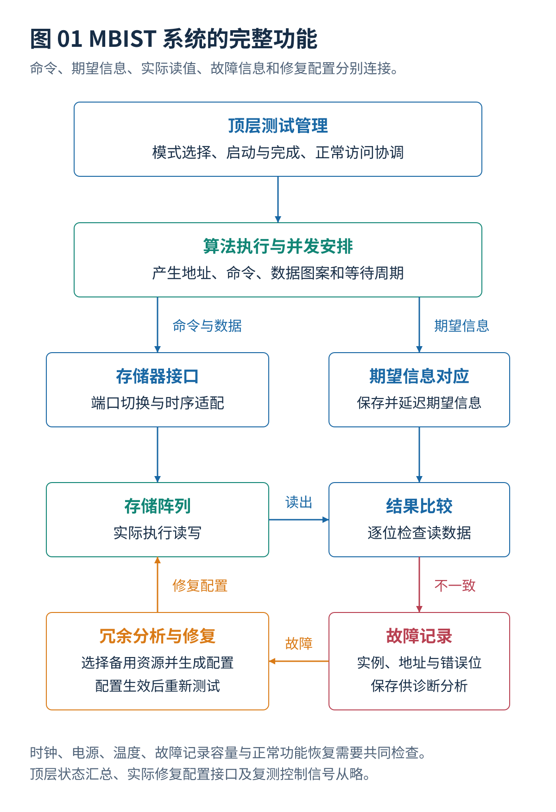
查看 9 条连接的起点、终点与含义
| 连接编号 | 起点 | 终点 | 含义 |
|---|---|---|---|
| manager-execute | manager | execute | 启动、模式与执行控制 |
| execute-interface | execute | interface | 地址、读写命令与写入数据 |
| execute-expect | execute | expect | 本次读请求的期望信息 |
| interface-array | interface | array | 实际存储器接口信号 |
| expect-compare | expect | compare | 按读延迟对应的期望值 |
| array-compare | array | compare | 存储器的实际读出数据 |
| compare-record | compare | record | 比较失败时记录故障信息 |
| record-repair | record | repair | 故障位置及错误位供冗余分析 |
| repair-array | repair | array | 合法修复配置控制备用资源替换 |
图 02 March 算法在 MBIST 中的执行位置


查看 8 条连接的起点、终点与含义
| 连接编号 | 起点 | 终点 | 含义 |
|---|---|---|---|
| control-address | controller | address | 地址方向及读写步骤 |
| control-data | controller | data | 数据图案与期望值规则 |
| address-memory | address | memory | 地址、读使能、写使能 |
| data-expected | data | expected | 期望值及其对应的有效信息 |
| data-memory | data | memory | 实际写入数据 |
| memory-compare | memory | compare | 实际读出数据 |
| expected-compare | expected | compare | 经过延迟对齐的期望信息 |
| compare-failure | compare | failure | 比较不一致时写入故障记录 |
图 03 控制器的三种执行方式


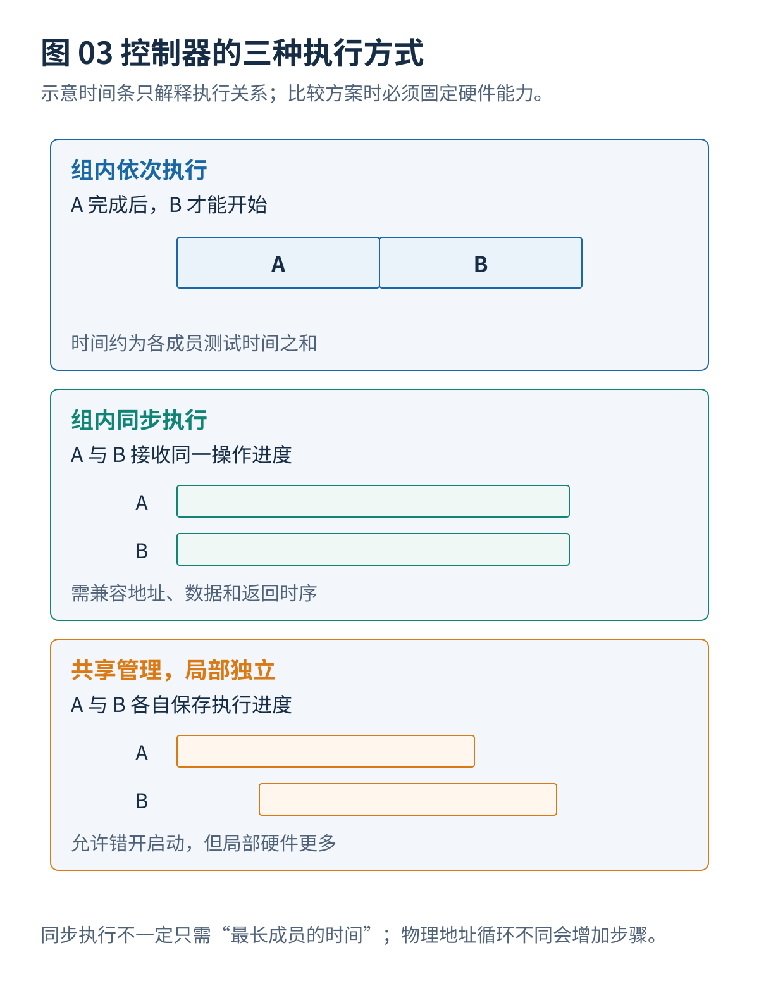
本图没有模块连接箭头；仅包含图表、矩阵或概念分项。
图 04 正确定位需要响应时间对应


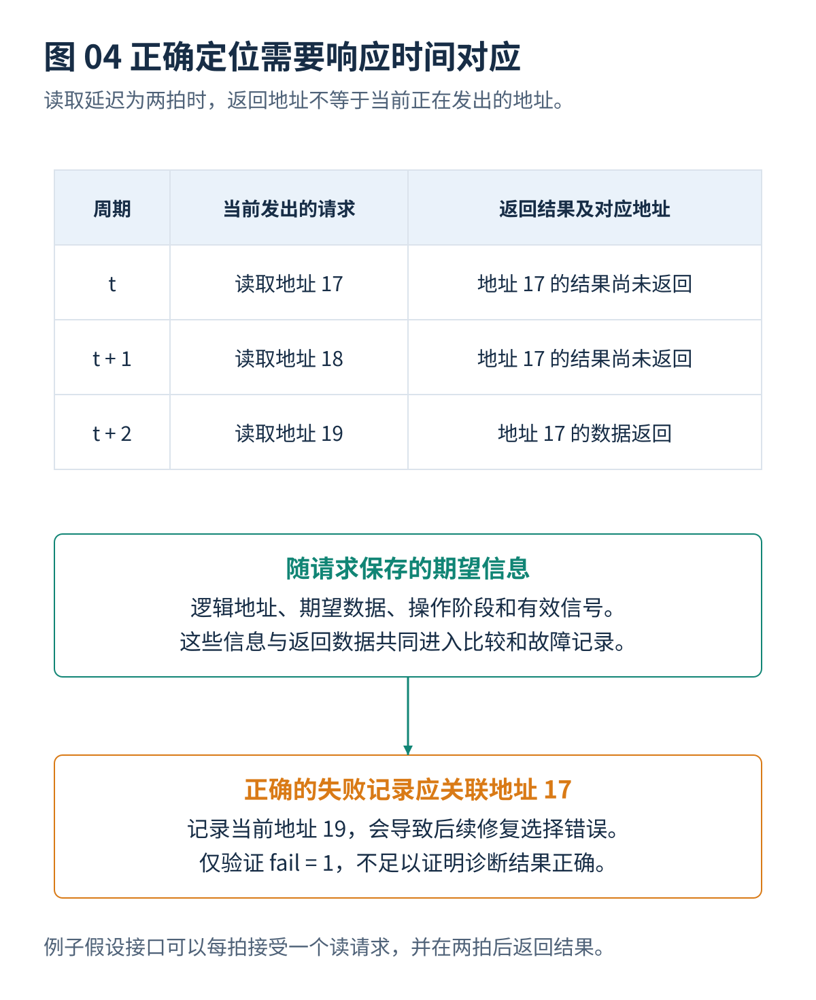
查看 1 条连接的起点、终点与含义
| 连接编号 | 起点 | 终点 | 含义 |
|---|---|---|---|
| expected-record | expected | record | 用返回请求的地址而非当前请求地址生成故障记录 |
图 05 常见存储器故障模型


本图没有模块连接箭头；仅包含图表、矩阵或概念分项。
图 06 耦合故障：先激励，再观察


查看 4 条连接的起点、终点与含义
| 连接编号 | 起点 | 终点 | 含义 |
|---|---|---|---|
| coupling | aggressor | victim | 故障导致的异常影响，不是正常数据连线 |
| order1 | step0 | step1 | 同一测试示例中的操作先后次序 |
| order2 | step1 | step2 | 同一测试示例中的操作先后次序 |
| order3 | step2 | step3 | 同一测试示例中的操作先后次序 |
图 07 March C− 的六次完整地址遍历


本图没有模块连接箭头；仅包含图表、矩阵或概念分项。
图 08 经典 March 算法的操作长度


本图没有模块连接箭头；仅包含图表、矩阵或概念分项。
图 09 动态故障与连续读取历史


查看 3 条连接的起点、终点与含义
| 连接编号 | 起点 | 终点 | 含义 |
|---|---|---|---|
| history1 | step0 | step1 | 在规定时间条件下连续执行 |
| history2 | step1 | step2 | 在规定时间条件下连续执行 |
| history3 | step2 | step3 | 在规定时间条件下连续执行 |
图 10 五单元邻近图案敏感故障


查看 4 条连接的起点、终点与含义
| 连接编号 | 起点 | 终点 | 含义 |
|---|---|---|---|
| top-influence | top | center | 相邻单元状态对中心单元行为的影响 |
| left-influence | left | center | 相邻单元状态对中心单元行为的影响 |
| right-influence | right | center | 相邻单元状态对中心单元行为的影响 |
| bottom-influence | bottom | center | 相邻单元状态对中心单元行为的影响 |
图 11 数据图案与相邻单元状态


本图没有模块连接箭头；仅包含图表、矩阵或概念分项。
图 12 从通用测试到复杂故障：长度比较


本图没有模块连接箭头；仅包含图表、矩阵或概念分项。
图 13 March 算法的选择与验证


查看 3 条连接的起点、终点与含义
| 连接编号 | 起点 | 终点 | 含义 |
|---|---|---|---|
| structure-faults | structure | faults | 根据电路结构确定故障建模条件 |
| faults-candidates | faults | candidates | 按故障目标形成候选算法集合 |
| candidates-verify | candidates | verify | 验证候选算法，不把候选项误画为串行测试步骤 |
图 14 四种“组”回答不同问题


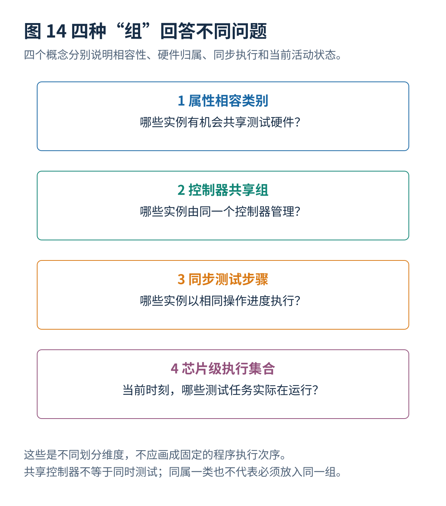
本图没有模块连接箭头；仅包含图表、矩阵或概念分项。
图 15 从粗略指标到电气验证


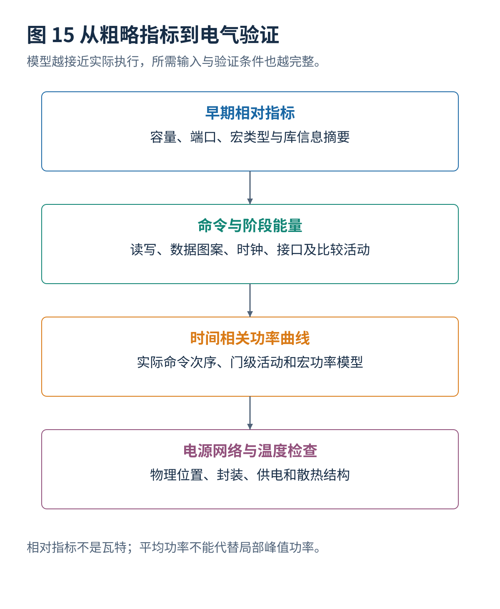
查看 3 条连接的起点、终点与含义
| 连接编号 | 起点 | 终点 | 含义 |
|---|---|---|---|
| sequence1 | step0 | step1 | 上一阶段完成并满足条件后进入下一阶段 |
| sequence2 | step1 | step2 | 上一阶段完成并满足条件后进入下一阶段 |
| sequence3 | step2 | step3 | 上一阶段完成并满足条件后进入下一阶段 |
图 16 两两关系与整个集合的约束


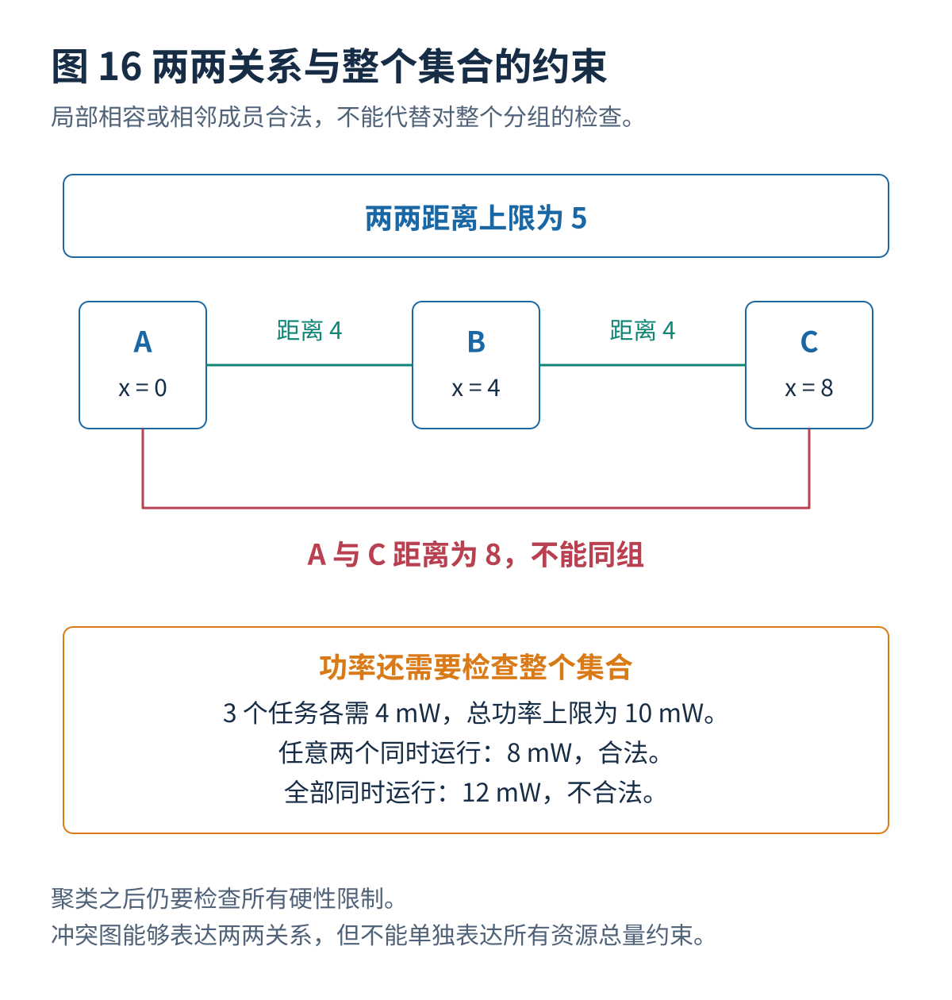
查看 3 条连接的起点、终点与含义
| 连接编号 | 起点 | 终点 | 含义 |
|---|---|---|---|
| A-B | A | B | A 与 B 的距离为 4，满足限制 |
| B-C | B | C | B 与 C 的距离为 4，满足限制 |
| A-C | A | C | A 与 C 的距离为 8，违反两两距离限制 |
图 17 三维芯片的局部温度约束


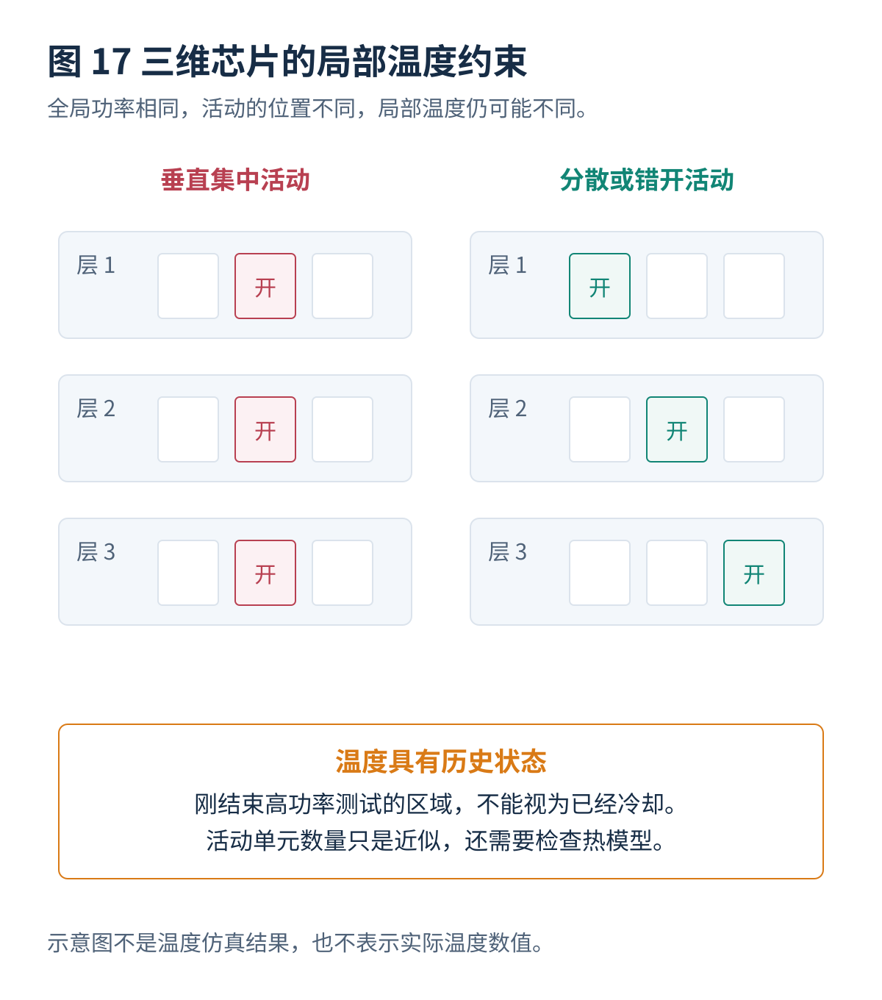
本图没有模块连接箭头；仅包含图表、矩阵或概念分项。
图 18 利用互补的阶段功率


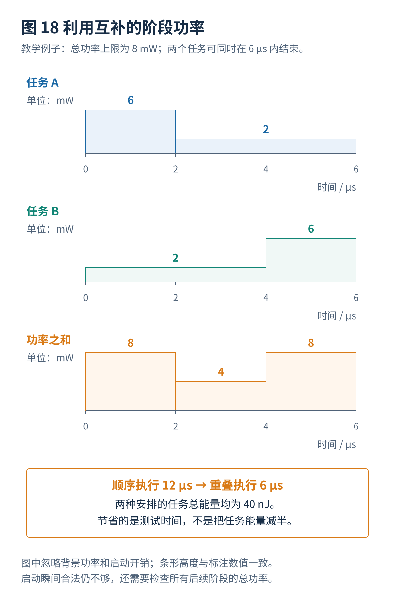
本图没有模块连接箭头；仅包含图表、矩阵或概念分项。
图 19 六个存储器的分组算例


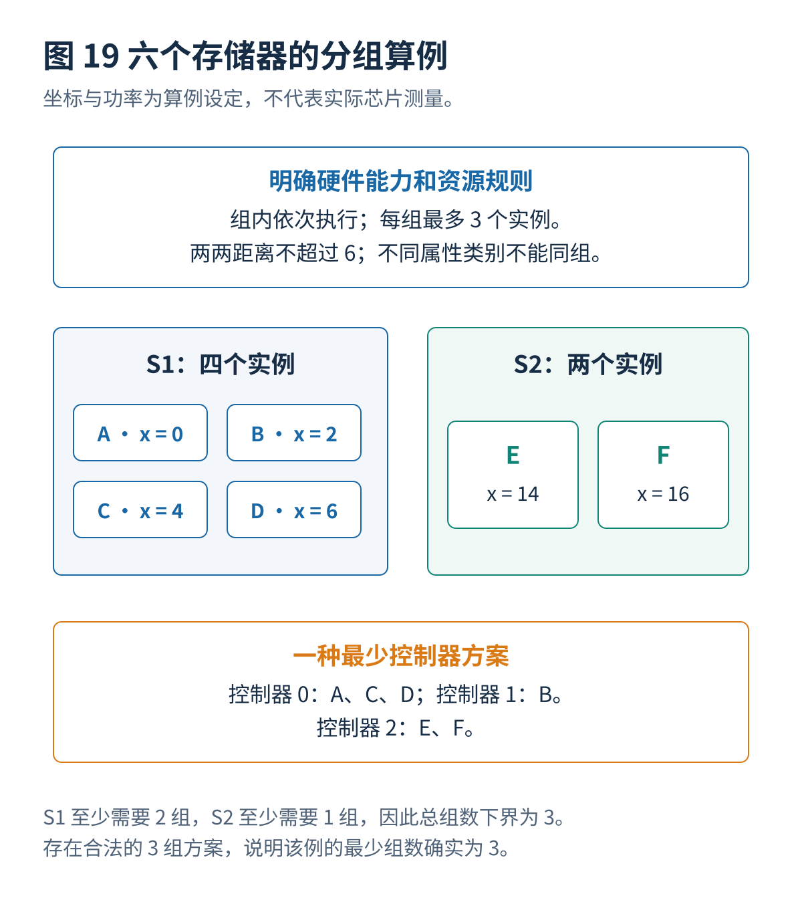
本图没有模块连接箭头；仅包含图表、矩阵或概念分项。
图 20 同样三个组，测试时间可以不同


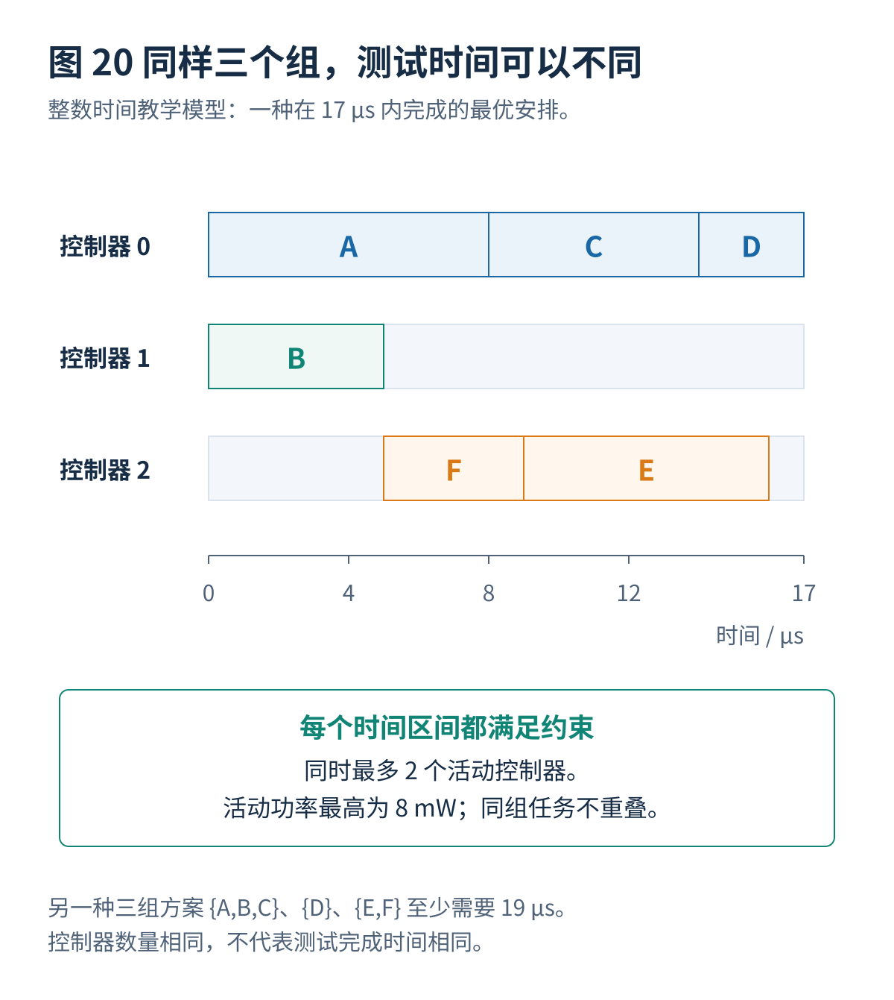
本图没有模块连接箭头；仅包含图表、矩阵或概念分项。
图 21 自适应测试的条件与返回路径


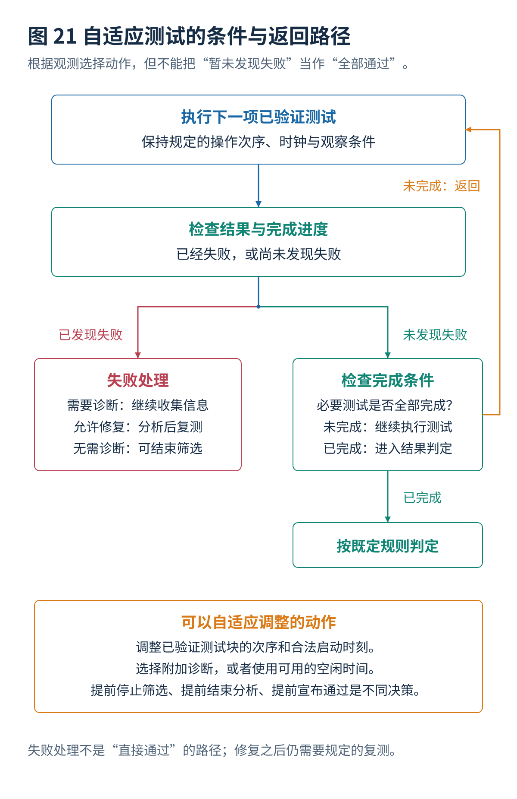
查看 6 条连接的起点、终点与含义
| 连接编号 | 起点 | 终点 | 含义 |
|---|---|---|---|
| execute-observe | execute | observe | 完成该项测试后评估结果 |
| observe-branch | observe | branch | 结果分支的公共连接点 |
| branch-failure | branch | failure | 已观察到测试失败 |
| branch-complete | branch | complete | 尚未发现失败，仍需检查完成条件 |
| continue | complete | execute | 必要测试未完成时返回，禁止提前宣布通过 |
| complete-decision | complete | decision | 仅在全部必要测试完成后判定 |
图 22 保留数据的短测试过程


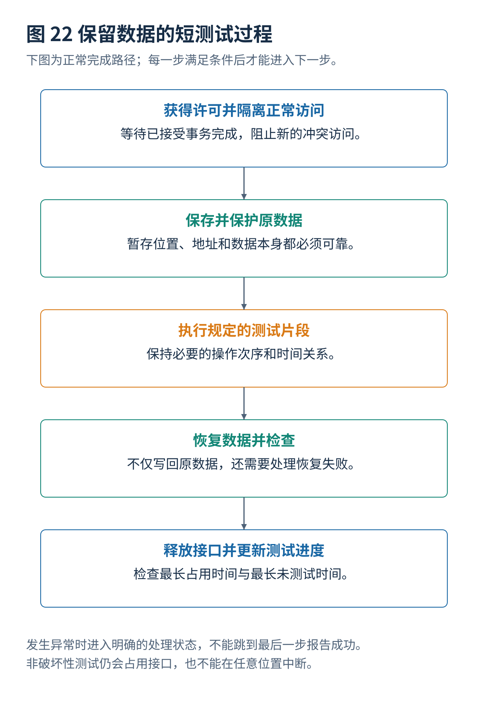
查看 4 条连接的起点、终点与含义
| 连接编号 | 起点 | 终点 | 含义 |
|---|---|---|---|
| sequence1 | step0 | step1 | 上一阶段完成并满足条件后进入下一阶段 |
| sequence2 | step1 | step2 | 上一阶段完成并满足条件后进入下一阶段 |
| sequence3 | step2 | step3 | 上一阶段完成并满足条件后进入下一阶段 |
| sequence4 | step3 | step4 | 上一阶段完成并满足条件后进入下一阶段 |
图 23 故障信息也会限制并发


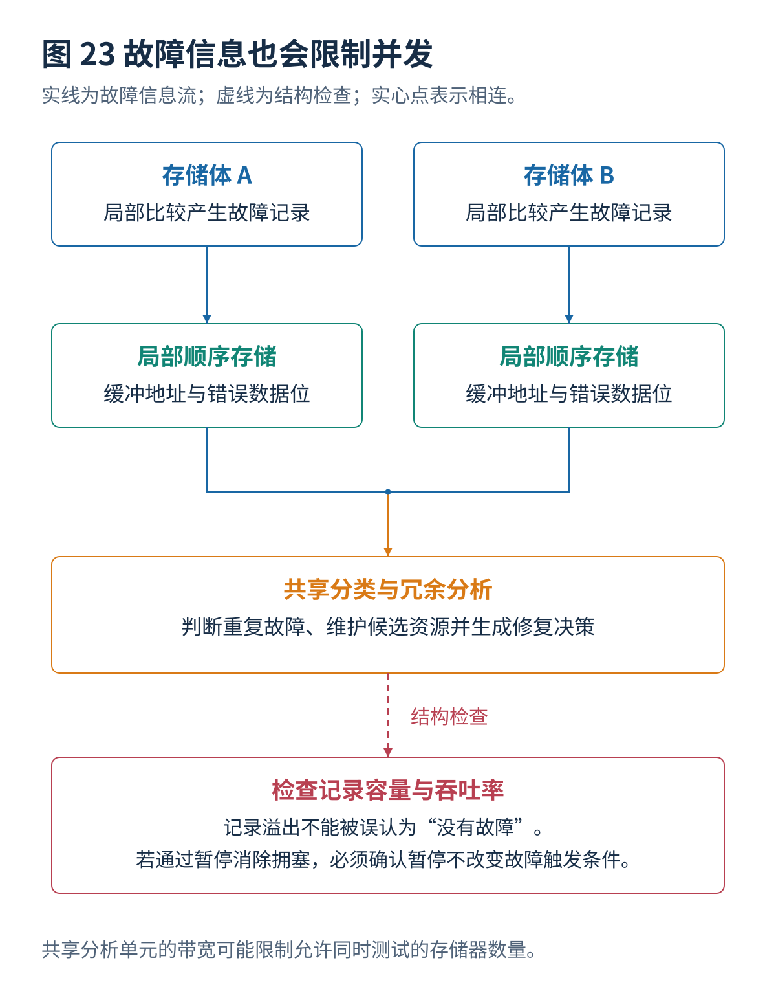
查看 6 条连接的起点、终点与含义
| 连接编号 | 起点 | 终点 | 含义 |
|---|---|---|---|
| local0 | memory0 | buffer0 | 该存储体的故障记录进入其局部缓冲 |
| local1 | memory1 | buffer1 | 该存储体的故障记录进入其局部缓冲 |
| buffer0-merge | buffer0 | merge | 局部缓冲 A 交给共享分析 |
| buffer1-merge | buffer1 | merge | 局部缓冲 B 交给共享分析 |
| merge-analysis | merge | analysis | 明确合并后的故障信息流 |
| analysis-capacity | analysis | capacity | 检查关系：不是额外的数据处理硬件级 |
图 24 备用行列的选择反例


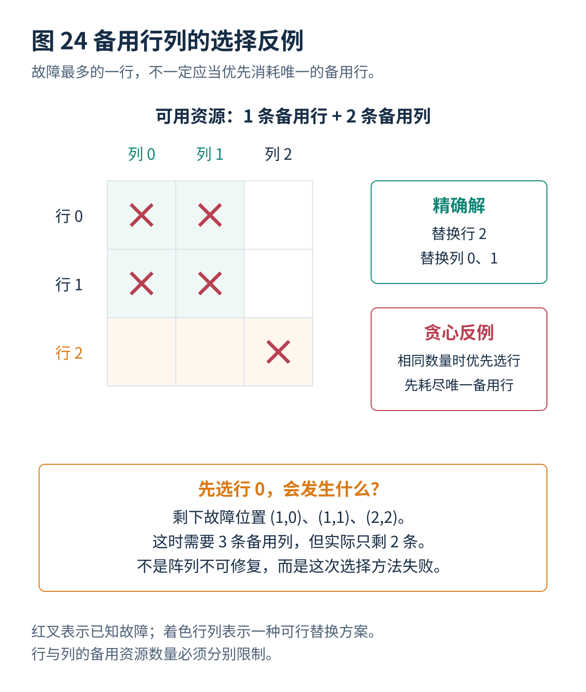
本图没有模块连接箭头；仅包含图表、矩阵或概念分项。
图 25 优化方案怎样进入实际工具


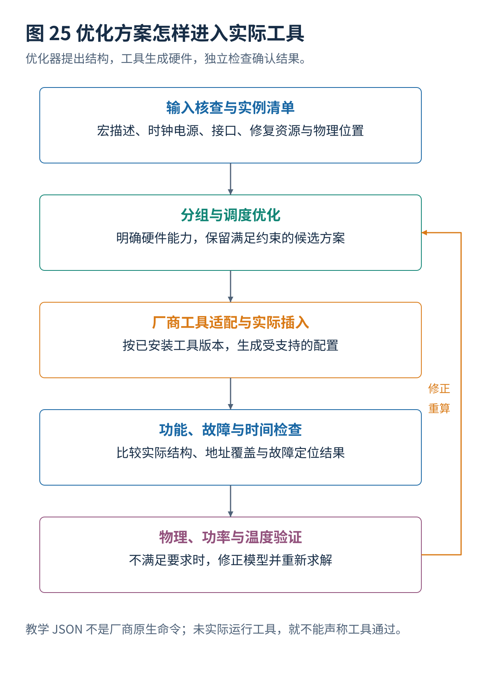
查看 5 条连接的起点、终点与含义
| 连接编号 | 起点 | 终点 | 含义 |
|---|---|---|---|
| sequence1 | step0 | step1 | 上一阶段完成并满足条件后进入下一阶段 |
| sequence2 | step1 | step2 | 上一阶段完成并满足条件后进入下一阶段 |
| sequence3 | step2 | step3 | 上一阶段完成并满足条件后进入下一阶段 |
| sequence4 | step3 | step4 | 上一阶段完成并满足条件后进入下一阶段 |
| revise | step4 | step1 | 物理、电气结果不满足要求时返回分组与调度优化 |